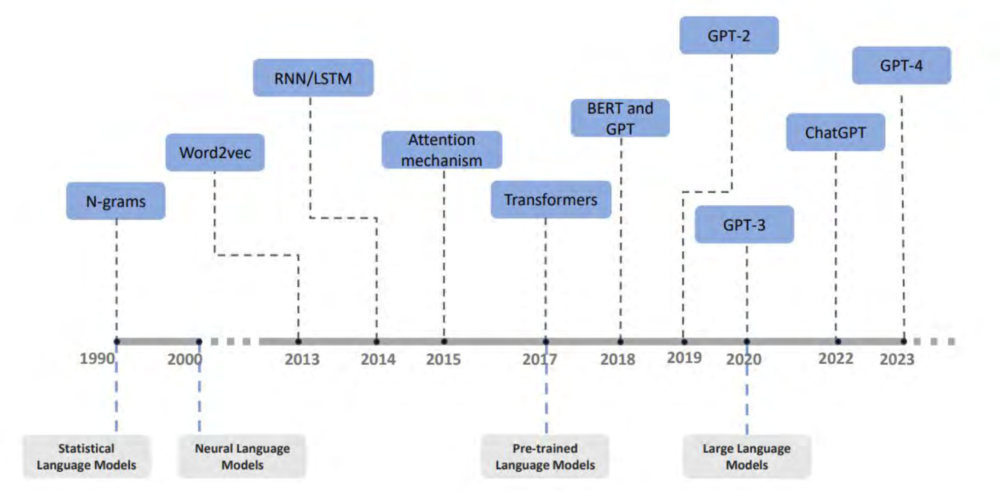
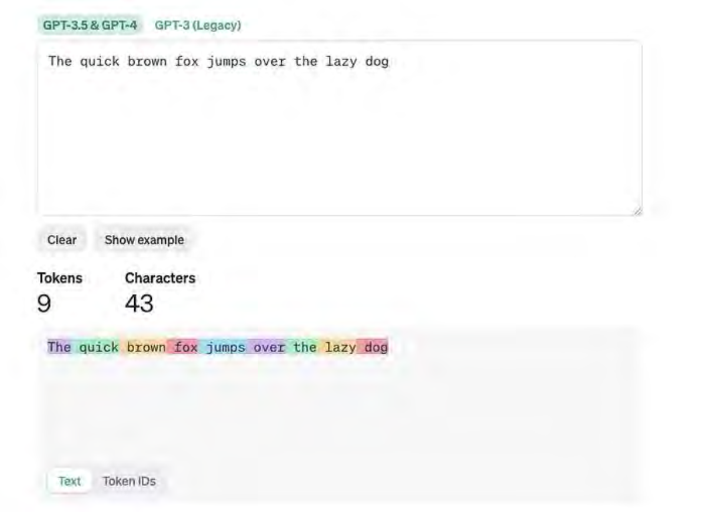
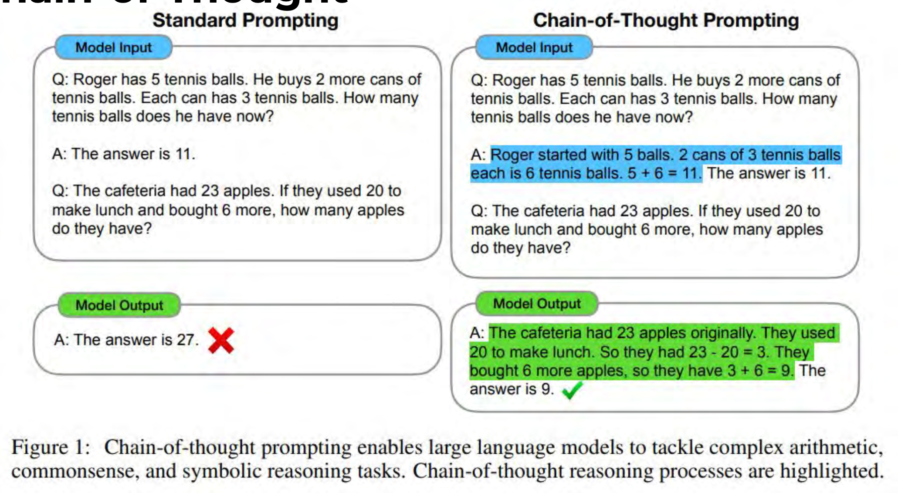

Framing
MODULE 02
What is AI?
A quick and dirty vocabulary for the next three hours.
AI as a Research Tool · University of Zürich · 2026
Press → to begin
Why this matters
Words are doing too much work
"AI", "model", "agent", "prompt" — used loosely in press, narrowly in practice.
If we can't name the parts, we can't audit them.
Goal: a working vocabulary, not a CS course.
By the end you'll know what a
token
is, what RLHF does, and why it matters for your research.
Where transformers fit

Transformers are one architecture within deep learning, within ML, within "AI".
Token
What's a token?
Sub-word units, not words.
Text in → tokens → numbers → model.
Every cost, limit, and "context window" is measured in tokens.
"Researcher" might be one token; "Zürich" might be three.

A sentence, tokenized.
The transformer, in one minute
The whole game
Receives a sequence of tokens.
Computes
attention
— which earlier tokens matter for what comes next.
Outputs a probability over the next token.
Everything else — essays, code, reasoning — is this one step, repeated.
Three stages of training
How a model gets built
Pre-train.
Web-scale data. Predict the next token. Output: a foundation model.
Mid-train.
Curated data — code, math, long documents. Sharpens capability.
Post-train.
Instruction tuning + RLHF. Turns it into a chatbot.
Three stages, three datasets, three objectives.
Pre-training
Predict the next token
Trained on most of the open web, books, code.
One objective: given context, guess the next token.
Output: a
foundation model
— fluent, unfocused, no instructions to follow.
This is where most of the compute and most of the "knowledge" lives.
Mid-training
Steering the foundation
Continued training on curated data: code, math, longer documents, higher-quality text.
Stretches capabilities the next stage will rely on.
Often where domain coverage (e.g., science, multilingual) is shored up.
Still no "follow instructions" behavior yet.
Post-training · RLHF
Turning a model into a chatbot
Instruction tuning
: examples of "good" question/answer pairs.
RLHF
— reinforcement learning from human feedback. Humans rank outputs; the model learns to climb that ranking.
This is where the model learns to be helpful, polite, refuse, hedge.
The behaviors you experience as "personality" all live here.
What RLHF actually does
Optimization, not understanding
An instruction-tuned model is
always
optimizing a loss function.
It converges toward a
local
maximum of "what humans rated as good".
Confident-sounding, agreeable, well-formatted — because those win rankings.
You are not talking to a knower. You are talking to an optimizer.
Knowledge cutoff
The model only knows the past
Training data has a hard cutoff date.
Anything after — elections, papers, deaths, retractions — is invisible to the base model.
"Current" outputs come from
tools
(search, retrieval), not the model itself.
If you don't know which one produced an answer, you can't trust it.
In-context learning
Prompting is programming
Context window
: everything the model can see right now — your prompt, prior turns, attached files.
Roles
:
system
(instructions),
user
(you),
assistant
(the model).
No weights are updated. The model learns from what's in the window, then forgets.
Every new session starts cold.
Reasoning · chain of thought
Thinking out loud — sort of
Model generates intermediate steps before its answer.
More steps = more tokens = more compute on the problem.
"Reasoning models" do this by default, often hidden.
Looks like thinking — still next-token prediction.

Chain of thought, made visible.
Recap
Vocabulary you now own
Token · context window · foundation model
Pre-train · mid-train · post-train · RLHF
Knowledge cutoff · in-context learning · roles
Chain of thought
If a vendor uses one of these loosely — that's a signal.